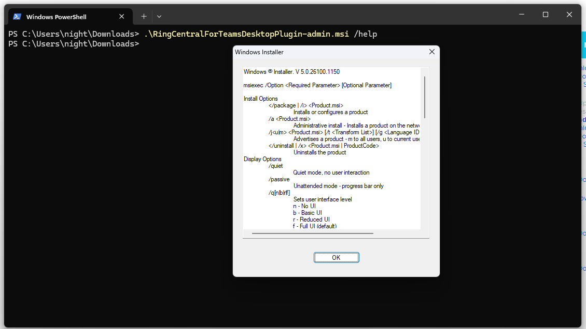
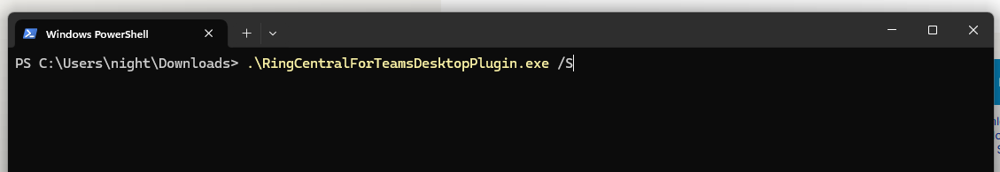
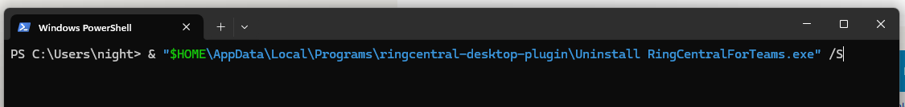

General Questions
Embedded App Questions
Q. What is the difference between the .MSI and the .EXE installers for the RingCentral for MS Teams Desktop Plugin?
A. The .MSI installer is intended for IT admin to deploy the Desktop Plugin with IT management tools. It is designed to not have auto-update features so that the IT admin can manage the update process. The .EXE installer is intended for end users to install the Desktop Plugin on their own and have auto-update features to keep the plugin up to date.
Q. How do I perform silent installation with the .MSI installer?
A. The .MSI installer actually comes with a help menu to show all the execution options. Use the following command to show the help menu, and you can find the /quiet option listed in the help menu.

Q. How do I perform silent installation with the .EXE installer?
A. The .EXE installer supports the /S option to perform silent installation. Please note that the /S is case sensitive.

Q. How do I perform silent uninstallation with the .EXE installer?
A. Unlike the .MSI installer, the .EXE installer it self does not work as a uninstaller. The .EXE installation will create an uninstaller in the installation directory. This uninstaller does support running in silent mode with the same /S option. In the following screenshot, the command assumes that the installation is using the default installation directory.

Q. If IT has auto user session clean up tools enabled, how do I ensure that the Embedded App's user session can be preserved?
A. The Embedded App's user session is stored in the following locations, please make sure to preserve these folders to keep the user session alive. Most users should be using the new MS Teams app currently, but there may be some virtual desktop users that are still using the classic MS Teams app.
- The new MS Teams app:
C:\Users\%username%\AppData\Local\Packages\MSTeams_8wekyb3d8bbwe - The classic MS Teams app:
%appdata%\Microsoft\Teams
Q. When I search for a contact in the Embedded App, contacts are not loaded or appearing. How can I resolve this?
A. To resolve contact search issues in the Embedded App, follow these steps:
- Ensure contact sync is set to "Default contact list" in your Embedded App settings
- Sign out of the Embedded App completely
- Sign back into the Embedded App
- Wait approximately 10 minutes for the sync process to complete
- Search for contacts again and verify they appear
Why the 10-minute wait? The app needs to sync all Microsoft 365 contacts (Global Address List, personal, and shared contacts) through multiple API calls. The system loads contacts in pages of 250 with rate limiting, so larger organizations require more time to complete the full sync.
For web app users: If the page reloads before contacts finish loading, it interrupts the sync process. Clear browser cache if the issue persists.
If contacts still don't appear after following these steps, escalate to the integration team for further investigation.
Q. Why don't I see the Phone tab inside the Embedded App?
A. When a user is identified as a Direct Routing (DR) user, the RingCentral for Teams Embedded App automatically disables the Phone tab because calling functionality is handled through the Microsoft Teams native dialer (Calls tab) instead.
How to confirm DR mode: Check if the user sees a dialpad in the Microsoft Teams native Calls tab. If the dialpad is visible there, it confirms the user is operating in DR mode.
To restore the Phone tab: The user must be removed from CloudPBX, which will: - Remove the dialpad from the Microsoft Teams native Calls tab - Enable the full Phone tab functionality in the RingCentral Embedded App - Allow access to all RingCentral calling features within the embedded app
Next steps: First, verify if the customer wants to use the RingCentral Embedded App for calling instead of Teams native calling via CloudPBX. If yes, escalate to Tier 3 or Service Engineering team to remove the user from CloudPBX (note: search by phone number as it may be assigned to a different user). If the customer prefers to keep CloudPBX/DR mode, explain that the limited Phone tab visibility is expected behavior for DR users.
Presence Sync Questions
Call Management and Routing
Q. When a user is already on a call in Microsoft Teams, whether internal or external, is there a way to prevent additional incoming calls, including those from call queues?
A. When presence sync is enabled, the presence status of the user on a native Teams meeting or call is shown as "Busy" on their Teams app and it is synced to show "Busy" on RC side as well. Now when another incoming call comes in, the source of that call matters. If the source of this new incoming call is:
- Microsoft Teams → then it'll follow the appropriate call waiting behavior set in the user's Teams app settings
- RingCentral call → the call comes through and displays to the user as this new incoming call is coming from a different platform (RingCentral) to what the user is currently on (Teams).
Here, the customer has a choice for #2, they can use the customized presence sync feature in Step 3 of the presence sync setup and choose whether they want to accept regular or queue calls coming from RingCentral when the user is busy in a native Teams meeting or call.
Q. If a user is currently on a call that came through a call queue, can other incoming calls be blocked, regardless of whether they are internal or external?
A. Yes, when a user answers a call from a call queue, their status should be updated to "In a call" or "Busy." If the RingCentral call queue settings are configured to skip agents who are busy, the system will not route any new calls to that user, including subsequent calls from the same or different queues.
Can be achieved with the customized presence sync feature described in the previous answer.
Do Not Disturb (DND) Mode
Q. When a user sets their status to Do Not Disturb in Teams, do call queue calls still route to the longest idle agent if the call queue has been set to longest idle?
A. No, they should not. DND is considered unavailable and will be skipped by the call queue routing logic, regardless of whether the routing is set to "longest idle," "round robin," or "simultaneous."
Q. Will the agent receive a missed call notification if they are in DND?
A. This can be inconsistent, but typically they should not receive an intrusive notification. The purpose of DND is to block all notifications, including calls. However, a missed call notification may appear in their activity feed once DND is turned off, depending on the call queue's configuration and whether the call was handled by another agent. In a standard call queue setup, if another agent answers the call, the call is considered resolved, and no missed call notification is sent to the other agents.
In a Meeting Status
Q. If a user's Teams status is set to In a Meeting, can we configure how calls are handled, such as sending them directly to voicemail?
A. This is possible, but it depends on the integration configuration. The "In a Meeting" status is a form of "busy" presence.
Q. How does it affect call queue routing? Will calls still go to the longest idle agent, and will they also be sent to voicemail?
A. Calls should not be routed to a user whose status is "In a Meeting" if the call queue is set to skip busy agents. The call queue will continue to search for the next available agent (the "longest idle" agent who is not in a meeting or DND). The call will not be sent to the user's voicemail unless it is explicitly configured to do so for all callers or if the call queue's overflow settings direct it to voicemail.
Call Waiting in RingCentral
Q. What happens when a user is already on a call, whether it's an internal Teams call, an external call, or a call queue call?
A. When Call Waiting is enabled in the RingCentral portal, a user will hear a tone to indicate a new incoming call (provided they are already on a RingCentral call and not Teams call). This applies to all types of calls (internal, external, or call queue).
The behavior could be different if the user is on a native Teams call and then a RingCentral call comes in, as the new call is originating from a different platform than what the user is currently on, the new call will be displayed with a ringtone.
Q. Will additional calls still come through, and how are they managed?
A. Yes, they will still come through. Assuming the current call they are on is from the RingCentral platform. The user will see a notification on their device with the caller ID of the new incoming call. The user can then choose to:
- Answer: This will place the current call on hold.
- Ignore: The incoming call will continue to ring and follow the configured routing rules (e.g., go to voicemail, another extension, etc.).
- Send to Voicemail: The user can directly send the new call to their personal voicemail.
Presence Sync Performance and Timing
Q. Why is presence sync between RingCentral and Microsoft Teams not working in real-time? Customers expect immediate presence updates when making or answering calls.
A. The Microsoft Teams Presence Sync was never designed to be real-time and operates through a server-side integration that communicates with Microsoft Graph API endpoints using the Presence.ReadWrite.All permission.
When a user answers/makes a call in the RingCentral app, the RC status changes to "Busy" immediately, but the server-side integration must then detect this change via subscription, call Microsoft's Graph API setPresence endpoint, and wait for Microsoft to process the request and update Teams presence. This complete API chain typically takes 10-30 seconds to fully process, not the immediate response the customer expects.
Key Technical Difference: On the RingCentral side, presence changes are event-based and occur immediately when call status changes. However, Microsoft Graph API presence updates involve additional processing layers and internal propagation within Microsoft's infrastructure, which introduces the delays regardless of the API call method used.
Important Note: We require users to wait at least 30 seconds after a call status change before verifying the Teams presence update, as the system architecture relies on multiple API calls and processing delays that are inherent to both RingCentral's subscription system and Microsoft's Graph API processing times.
Configuration and Conflicts
Q. Are there any known settings conflicts between Microsoft Teams and RingCentral that could affect call routing, notifications, or caller ID?
A. Presence Sync: Delayed presence sync between Teams and RingCentral is the most frequent issue. A user might appear as "Available" in one system but "Busy" in the other, leading to calls being routed when they should not be, as it can take up to 30 seconds to a minute for the updated presence to come through from Microsoft.
Q. Why does the RingCentral desktop app always show "Offline" even when my presence shows "Available" on Microsoft Teams?
A. Both the RingCentral App and RingCentral Teams Embedded App display presence from the same backend API. The most likely cause is that your status was manually set to "Offline" in the RingCentral App at some point, creating a "sticky" persistent status that won't automatically change even when Microsoft Teams shows "Available" or Presence Sync is enabled.
Key distinction: Manual "Offline" status (user explicitly set) persists until manually changed back, while automatic "Offline" status (due to inactivity) automatically resets to "Available" when you become active again. RingCentral's presence system treats manual status changes as intentional user actions and won't override them automatically, even when Teams shows "Available."
Immediate solution: Open the RingCentral App and manually change your status from "Offline" to "Available" in the presence dropdown. After this change, Presence Sync should resume working normally and automatically sync with Microsoft Teams presence.
If the issue persists: Confirm whether you manually set your RingCentral status to Offline at any point (including on the mobile app, which might set Offline when closed). After changing to "Available," wait 30 seconds for presence to propagate, then sign out and back in to both apps to refresh the presence cache. Test by changing your Microsoft Teams presence to Busy/DND to verify if it updates in the RingCentral App and Embedded App.
Best practice: Avoid manually setting Offline or DND statuses in the RingCentral App if you're using Presence Sync. Instead, manage your presence through Microsoft Teams, which will sync to RingCentral automatically.
Q. Why does a contact's presence look different in the RingCentral App HUD compared to the RingCentral for Teams Embedded App HUD?
A. These two HUDs display presence from different sources. The RingCentral for Teams Embedded App HUD shows the phone system presence (same as Service Web and RingCentral for Google), while the RingCentral App HUD displays the user's RingCentral App presence status from the RC Presence API.
Technical difference: The RingCentral App HUD shows the user's actual app status (presenceStatus and userStatus fields). If a user manually sets themselves to "Offline" in the RingCentral app, that becomes a "sticky" status that Presence Sync won't override automatically, creating different presence displays between the two systems.
Key distinction: Manual "Offline" status is sticky and persists until manually changed back, while automatic "Offline" status (from inactivity) temporarily resets to "Available" when the user becomes active. Presence Sync treats manual status changes as intentional user actions and won't override them, even when Teams presence shows "Available."
Resolution: If a contact appears with different presence in the two HUDs, have them manually change their RingCentral App status back to "Available" for Presence Sync to resume working properly.
Recommendation: Users should avoid manually setting Offline or DND statuses in the RingCentral App when using Presence Sync. Let the integration handle presence automatically based on Microsoft Teams activity.
Future enhancement: Unified presence behavior across both HUDs is on the product roadmap but depends on other team dependencies.
Call Queue Caller ID Issues
Q. When receiving internal calls via a call queue, the caller appears as external. Is there a way to distinguish internal from external callers?
A. To distinguish callers, a common solution is to configure the call queue to prepend a special prefix to the caller ID, such as "Queue Call: [Caller Name]" or "CQ - [Caller Name]." This helps agents know the call is coming from a queue and allows them to identify the original caller from the appended information.
Q. Missed call emails sometimes show no caller ID. Can this be resolved?
A. Please share examples for this as well, including any screenshots or screen recordings or the affected users' information so we can understand better, and we may need to gather logs so we can investigate this further.
Missed Call Notifications
Q. If a call comes through a call queue and is answered by one agent, why do the other agents who did not answer still receive a missed call notification in Microsoft Teams? Is this normal or expected behavior?
A. No, this is generally not normal behavior for a properly configured call queue. Reason for these issues can be the following:
- Delayed Presence Sync: The system might not be updating the status of the agents quickly enough.
- Integration-Specific Bug: There may be a known bug or misconfiguration within the RingCentral for Teams application itself that causes it to incorrectly generate these notifications.
- Configuration Error: The call queue settings might be misconfigured, for instance, by not properly tracking which agent handled the call. This is a setting that should be addressed by a RingCentral admin.
Please share examples for this as well, including any screenshots or screen recordings, or the affected users' information. If this issue happens consistently, we may need to gather logs for further investigation.